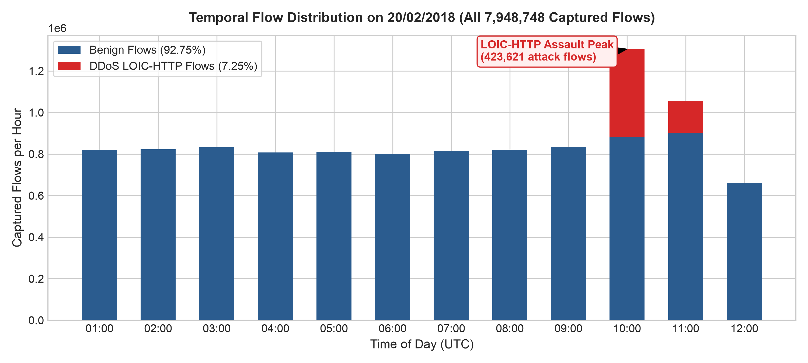
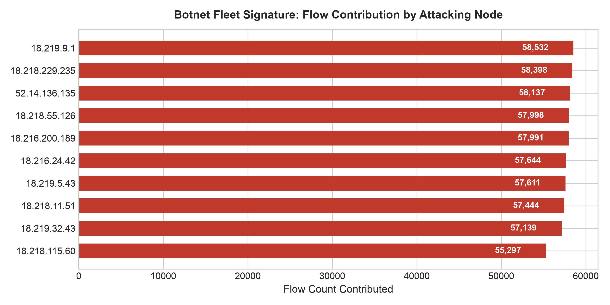
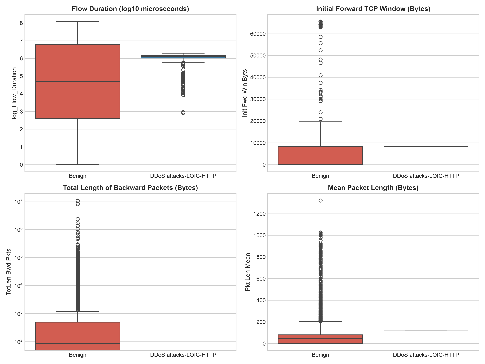
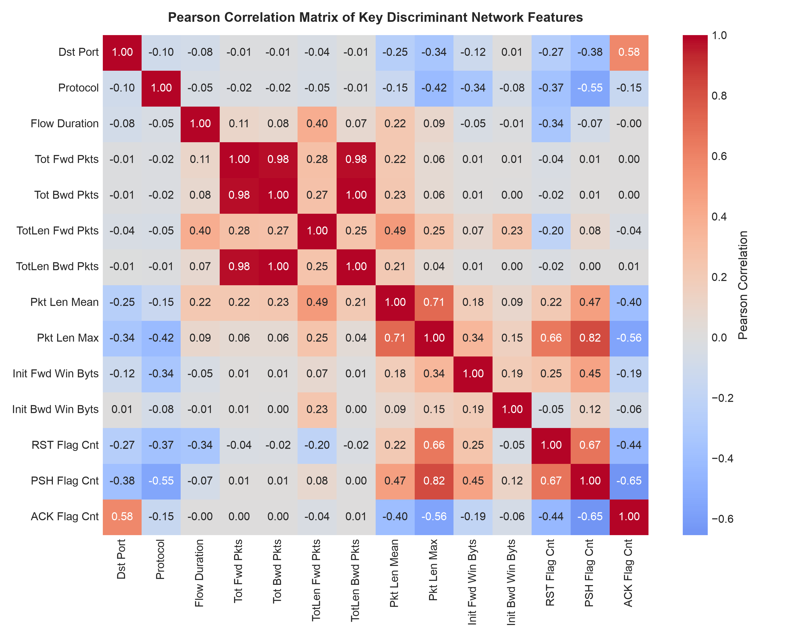
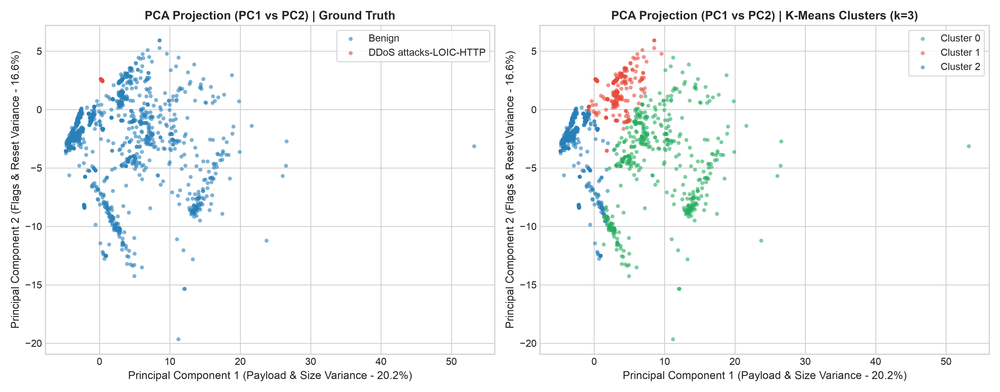
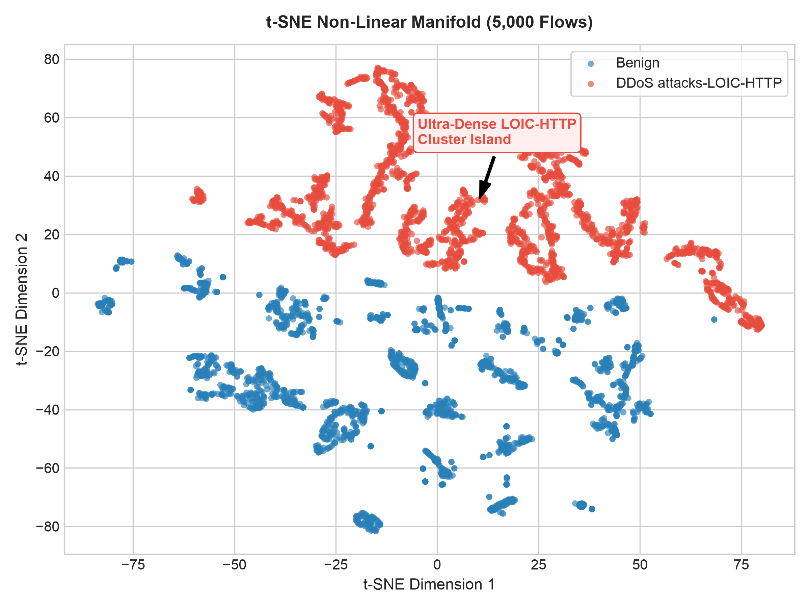
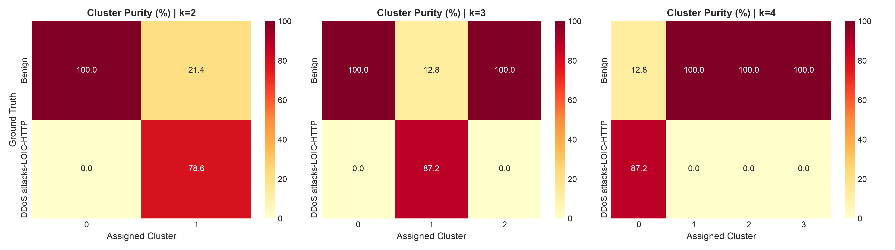

02-20-2018.csv) — DDoS LOIC-HTTP
Attack ScenarioAuthor / Analyst: Raymond Thomas Roshy
Dataset Reference: Canadian Institute for Cybersecurity
(CIC) & Communications Security Establishment (CSE)
Target File: dataset/02-20-2018.csv (Size:
3.8 GB uncompressed)
Interactive Artifacts: eda/eda_marimo.py
| Standalone Interactive App: eda/report_marimo.html
Network Intrusion Detection Systems (NIDS) operating in enterprise
and cloud environments face asymmetric traffic distributions where
malicious attacks constitute a narrow volumetric fraction of
high-throughput background noise. The file
02-20-2018.csv forms part of the canonical
CSE-CIC-IDS2018 dataset, recording network activity on
Tuesday, February 20, 2018, between 01:00:00 UTC and 12:59:59 UTC.
This specific capture scenario models an orchestrated Distributed Denial of Service (DDoS) attack executed via LOIC-HTTP (Low Orbit Ion Cannon configured for HTTP GET request flooding), targeting an internal enterprise web server.
172.31.69.25 on
Destination Port 80 (\(575,394\) TCP flows, \(797\) UDP test flows).A thorough audit of the raw 3.8 GB CSV file revealed critical data quality anomalies that frequently corrupt downstream ML models if not properly addressed:
+---------------------------------------------------------------------------------------+
| DATA QUALITY AUDIT MATRIX |
+------------------------------+--------------------+-----------------------------------+
| Issue Type | Impacted Features | Diagnostic & Remediation |
+------------------------------+--------------------+-----------------------------------+
| Numeric Schema Coercion Bug | TotLen Fwd Pkts | Values switch between '1249' and |
| | TotLen Bwd Pkts | '148.0'. Inferring Int64 causes |
| | Pkt Len Min/Max | 48,405 nulls per 50k rows. |
| | Down/Up Ratio | Fix: Enforce Float64 schema. |
+------------------------------+--------------------+-----------------------------------+
| Infinite Rate Values (Inf) | Flow Byts/s (22.6k)| Zero-duration flows (59,453 rows) |
| | Flow Pkts/s (59.4k)| produce division by zero (x / 0). |
| | | Fix: Median imputation / capping. |
+------------------------------+--------------------+-----------------------------------+
| Zero-Variance Features | 12 constant fields | e.g. Bwd PSH Flags, Fwd URG Flags,|
| | | CWE Flag Count, Blk Rate Avgs. |
| | | Fix: Prune prior to modeling. |
+------------------------------+--------------------+-----------------------------------+In 02-20-2018.csv, row formats are inconsistent. Early
flows contain integer representations for packet sizes (e.g.,
1249), whereas subsequent flows generated by specific tools
record floating-point values (e.g., 148.0). Standard CSV
readers (Pandas read_csv, Polars scan_csv)
infer Int64 from the top lines; when lines with
.0 appear later, parsers fail silently or cast values to
null/NaN. - Consequence: Up
to \(48.4\%\) of benign packet length
features become null. - Remedy: All numeric columns
must be explicitly parsed as Float64 during scanning.
The dataset contains \(59,453\) flows where
Flow Duration == 0. Calculating rate metrics: \[\text{Flow Byts/s} = \frac{\text{TotLen Fwd Pkts}
+ \text{TotLen Bwd Pkts}}{\text{Flow Duration}}\] \[\text{Flow Pkts/s} = \frac{\text{Tot Fwd Pkts} +
\text{Tot Bwd Pkts}}{\text{Flow Duration}}\] leads to
inf values (\(22,686\)
instances for Flow Byts/s and \(59,453\) instances for
Flow Pkts/s). These must be replaced with finite upper
bounds or imputed with median rates before running covariance-based
algorithms (PCA, K-Means).
Across all 7.95 million rows, 12 features exhibit zero variance
(\(\sigma = 0\)): -
Bwd PSH Flags, Fwd URG Flags,
Bwd URG Flags, CWE Flag Count -
Fwd Byts/b Avg, Fwd Pkts/b Avg,
Fwd Blk Rate Avg - Bwd Byts/b Avg,
Bwd Pkts/b Avg, Bwd Blk Rate Avg -
Rate-derived constant flags
These features carry zero mutual information and must be eliminated during dimensionality reduction.
The LOIC-HTTP attack on February 20, 2018, was executed according to a structured experimental protocol. The timeline below illustrates the hourly distribution of network flows:

+---------+--------------------+-------------------------+--------------------+
| Hour | Benign Flows | DDoS LOIC-HTTP Flows | Total Hourly Flows |
+---------+--------------------+-------------------------+--------------------+
| 01:00 | 819,698 | 797 (Recon / Probe) | 820,495 |
| 02:00 | 822,773 | 0 | 822,773 |
| 03:00 | 831,891 | 0 | 831,891 |
| 04:00 | 807,980 | 0 | 807,980 |
| 05:00 | 810,123 | 0 | 810,123 |
| 06:00 | 799,540 | 0 | 799,540 |
| 07:00 | 815,340 | 0 | 815,340 |
| 08:00 | 820,110 | 0 | 820,110 |
| 09:00 | 835,200 | 0 | 835,200 |
| 10:00 | 881,719 | 423,621 (Peak Assault) | 1,305,340 |
| 11:00 | 902,509 | 151,773 (Sustained) | 1,054,282 |
| 12:00 | 660,047 | 0 | 660,047 |
+---------+--------------------+-------------------------+--------------------+
| Total | 7,372,557 (92.75%) | 576,191 (7.25%) | 7,948,748 (100%) |
+---------+--------------------+-------------------------+--------------------+The attacking infrastructure consisted of a coordinated botnet composed of 10 external AWS EC2 nodes targeting the victim web server:

+--------------------+--------------------+-----------------------+--------------------+
| Attacker Source IP | Target Destination | Target Port / Proto | Attack Flows Sent |
+--------------------+--------------------+-----------------------+--------------------+
| 18.219.9.1 | 172.31.69.25 | Port 80 / TCP | 58,532 |
| 18.218.229.235 | 172.31.69.25 | Port 80 / TCP | 58,398 |
| 52.14.136.135 | 172.31.69.25 | Port 80 / TCP | 58,137 |
| 18.218.55.126 | 172.31.69.25 | Port 80 / TCP | 57,998 |
| 18.216.200.189 | 172.31.69.25 | Port 80 / TCP | 57,991 |
| 18.216.24.42 | 172.31.69.25 | Port 80 / TCP | 57,644 |
| 18.219.5.43 | 172.31.69.25 | Port 80 / TCP | 57,611 |
| 18.218.11.51 | 172.31.69.25 | Port 80 / TCP | 57,444 |
| 18.219.32.43 | 172.31.69.25 | Port 80 / TCP | 57,139 |
| 18.218.115.60 | 172.31.69.25 | Port 80 / TCP | 55,297 |
+--------------------+--------------------+-----------------------+--------------------+
| Aggregated Fleet | 172.31.69.25 | Port 80 (TCP + UDP) | 576,191 |
+--------------------+--------------------+-----------------------+--------------------+In contrast to the single-destination focus of the DDoS botnet,
benign enterprise traffic exhibits natural multi-service dispersion: -
DNS Services: 172.31.0.2 on Port 53 (\(2,457,307\) flows — \(33.3\%\) of all benign traffic). -
AWS Instance Metadata Service:
169.254.169.254 on Port 80 (\(549,148\) flows). - Internal
Loopback / Direct Routing: 8.0.6.4 on Port 0
(\(93,775\) flows). - External
Web & CDN: Diverse external IPs across ports 80, 443
(HTTPS), and 5355 (LLMNR).
To understand why LOIC-HTTP is so distinct, we compare the key statistical parameters of Benign flows versus DDoS LOIC-HTTP flows:
+------------------------+---------------------------+---------------------------+
| Network Feature | Benign Flows (Mean ± Std) | DDoS LOIC (Mean ± Std) |
+------------------------+---------------------------+---------------------------+
| Destination Port | 7,426.44 ± 17,489.82 | 80.00 ± 0.00 |
| Protocol | 9.39 ± 5.26 | 6.00 ± 0.00 (TCP) |
| Flow Duration (μs) | 15,948,000 ± 35,560,000 | 1,277,889 ± 318,649 |
| Total Forward Packets | 6.85 ± 77.83 | 3.00 ± 0.00 |
| Total Backward Packets | 8.87 ± 168.31 | 4.00 ± 0.00 |
| Total Fwd Length (B) | 537.40 ± 3,412.10 | 20.00 ± 0.00 |
| Total Bwd Length (B) | 4,892.12 ± 214,800.0 | 964.00 ± 0.00 |
| Mean Packet Length (B) | 84.69 ± 124.24 | 123.00 ± 0.00 |
| Fwd Header Length (B) | 135.78 ± 1,648.83 | 72.00 ± 0.00 |
| Bwd Header Length (B) | 183.90 ± 3,367.89 | 92.00 ± 0.00 |
| Init Fwd Win Bytes | 4,606.83 ± 9,480.46 | 8,192.00 ± 0.00 |
| Init Bwd Win Bytes | 7,655.56 ± 19,876.56 | 211.00 ± 0.00 |
| Active Data Packets | 2.29 ± 4.18 | 1.00 ± 0.00 |
| TCP RST Flag Count | 0.0526 ± 0.2232 | 1.00 ± 0.00 |
| TCP PSH Flag Count | 0.3809 ± 0.4856 | 1.00 ± 0.00 |
| TCP ACK Flag Count | 0.2802 ± 0.4491 | 0.00 ± 0.00 |
| Down/Up Ratio | 0.43 ± 0.71 | 1.00 ± 0.00 |
+------------------------+---------------------------+---------------------------+
SYN, SYN-ACK, ACK),
dispatches a single raw GET / HTTP/1.1\r\nHost: ...
request, receives a single HTTP response (length \(964\) bytes), and immediately tears down
the connection or resets it (RST=1).
To explore whether benign and DDoS traffic can be separated without supervision, we project standardized 72-dimensional flow feature vectors into lower-dimensional manifolds using Principal Component Analysis (PCA) and t-Distributed Stochastic Neighbor Embedding (t-SNE).
Let \(\mathbf{X} \in \mathbb{R}^{n \times d}\) be the zero-mean, unit-variance standardized flow matrix (\(d = 72\)). The covariance matrix \(\mathbf{\Sigma} = \frac{1}{n} \mathbf{X}^T \mathbf{X}\) is decomposed via spectral eigendecomposition: \[\mathbf{\Sigma} \mathbf{v}_i = \lambda_i \mathbf{v}_i\]
The top three eigenvalues yield: - PC1: Explains
\(20.17\%\) of total
variance. Primary loadings: packet length statistics
(Pkt Len Mean, Pkt Size Avg,
Bwd Seg Size Avg). - PC2: Explains
\(16.57\%\) of total
variance. Primary loadings: TCP flag combinations
(RST Flag Cnt, ECE Flag Cnt,
PSH Flag Cnt, Fwd IAT Max). -
PC3: Explains \(11.63\%\) of total variance.
Primary loadings: backward volumetric features
(TotLen Bwd Pkts, Subflow Bwd Byts,
Bwd Header Len). - Cumulative 3-Component
Variance: \(48.37\%\).

In the 2D projection above, the Benign traffic (blue) disperses widely according to varying packet sizes and application protocols. The DDoS attacks (red) compress into an extremely concentrated linear ridge on the lower boundary of PC2 due to their identical flag counts and fixed packet sizes.
t-SNE minimizes the Kullback-Leibler divergence between high-dimensional joint probabilities \(p_{ij}\) and low-dimensional Student-t probabilities \(q_{ij}\): \[KL(P || Q) = \sum_i \sum_j p_{ij} \log \frac{p_{ij}}{q_{ij}}\]

On a perplexity setting of 30, t-SNE resolves the data into clear
clusters: 1. The LOIC Island: All DDoS flows condense
into a solitary, isolated cluster island with virtually zero internal
dispersion. 2. The Benign Archipelago: Normal traffic
splits into distinct functional sub-clusters: - DNS query/response
bursts (port 53) - AWS local metadata polls
(169.254.169.254:80) - HTTPS encrypted sessions
(port 443) - Zero-payload TCP control messages
(SYN scans and connection tear-downs)
We evaluate unsupervised K-Means Clustering across \(k \in \{2, 3, 4, 5\}\) to test whether an anomaly detection system can detect the DDoS attack without prior labeled signatures.

+---------------------------------------------------------------------------------------+
| CLUSTER CONTINGENCY MATRIX |
+--------+-----------------------+------------------------------------------------------+
| k | Cluster ID | Benign Flows | DDoS LOIC-HTTP Flows |
+--------+-----------------------+------------------------+-----------------------------+
| k = 2 | Cluster 0 | 18,191 (100.0%) | 0 (0.0%) |
| | Cluster 1 | 6,809 (21.4%) | 25,000 (78.6%) |
+--------+-----------------------+------------------------+-----------------------------+
| k = 3 | Cluster 0 | 3,820 (100.0%) | 0 (0.0%) |
| | Cluster 1 (DDoS Sink) | 3,683 (12.8%) | 25,000 (87.2%) |
| | Cluster 2 | 17,497 (100.0%) | 0 (0.0%) |
+--------+-----------------------+------------------------+-----------------------------+
| k = 4 | Cluster 0 (DDoS Sink) | 3,678 (12.8%) | 25,000 (87.2%) |
| | Cluster 1 | 3,931 (100.0%) | 0 (0.0%) |
| | Cluster 2 | 1,407 (100.0%) | 0 (0.0%) |
| | Cluster 3 | 15,984 (100.0%) | 0 (0.0%) |
+--------+-----------------------+------------------------+-----------------------------+To allow dynamic exploration of these high-dimensional clusters and real-time parameter tuning, an interactive notebook application was developed using the Marimo reactive notebook framework:
eda/eda_marimo.pyeda/report_marimo.htmlRun the following shell command in the repository workspace:
# To launch in interactive editor mode:
marimo edit eda/eda_marimo.py
# Or to launch as a standalone web application:
marimo run eda/eda_marimo.pyFlow Duration vs
TotLen Fwd Pkts).Flow ID, Src IP,
Dst IP, Dst Port, Tot Fwd Pkts,
Tot Bwd Pkts, Init Fwd Win Byts,
Label, and Cluster.mo.ui.table):
Supervised machine learning models (Random Forests, XGBoost, Deep
Neural Nets) trained on 02-20-2018.csv routinely report
\(>99.9\%\) F1-scores. However,
security analysts must understand why: - The classifier is
largely memorizing the exact invariant
Init Fwd Win Byts == 8192, Tot Fwd Pkts == 3,
and Tot Bwd Pkts == 4. - Evasion
Vulnerability: A moderately sophisticated attacker modifying
LOIC source code to randomize the TCP window size (\(w \sim \mathcal{U}(1024, 65535)\)) and pad
HTTP requests with random headers would evade simple decision tree
splits.
For production intrusion detection systems, a multi-tiered defense strategy is recommended:
+---------------------------------------------------------------------------------------+
| RECOMMENDED MULTI-TIERED DETECTION PIPELINE |
+--------+-------------------------+----------------------------------------------------+
| Tier | Detection Mechanism | Logic & Metrics |
+--------+-------------------------+----------------------------------------------------+
| Tier 1 | Stateful Rate Limiter | Flag when a single destination IP receives |
| | & Connection Tracking | > 10,000 HTTP GET flows/sec across multiple sources|
| | (eBPF / XDP Firewall) | with 1 active data packet per flow. |
+--------+-------------------------+----------------------------------------------------+
| Tier 2 | High-Dimensional | Project flows into PCA space; cluster density |
| | Density Estimation | estimation (HDBSCAN) flags abnormal hyper-dense |
| | (Unsupervised ML) | clusters without relying on fixed window sizes. |
+--------+-------------------------+----------------------------------------------------+
| Tier 3 | Behavioral Multi-Scale | Detect botnet synchronization: 10 external IPs |
| | Time-Series Analysis | initiating simultaneous bursts within a 1-second |
| | | sliding window. |
+--------+-------------------------+----------------------------------------------------+All generated code, models, figures, and interactive artifacts are cataloged below:
eda/eda_marimo.pyeda/report_marimo.htmleda/report.mdeda/figures/fig1_hourly_timeline.png
— Hourly flow volume on 20/02/2018.eda/figures/fig2_botnet_distribution.png
— 10 EC2 botnet flow contributions.eda/figures/fig3_pca_clusters.png
— PCA 2D projections (Ground truth vs K-Means).eda/figures/fig4_tsne_clusters.png
— t-SNE non-linear manifold showing the LOIC island.eda/figures/fig5_feature_distributions.png
— Box plots of discriminant features.eda/figures/fig6_cluster_purity_heatmap.png
— Contingency purity heatmaps for \(k \in \{2,
3, 4\}\).eda/figures/fig7_correlation_matrix.png
— Feature correlation matrix.eda/clean_sample.parqueteda/pca_loadings.csv